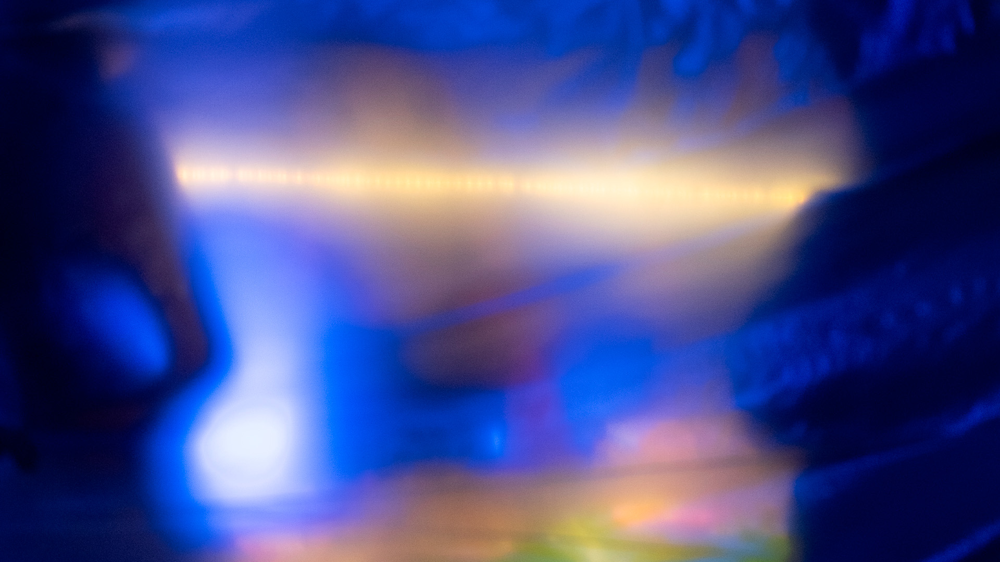

Ignacio Serrano
Artista e investigador en la medida de lo posible.
-
2021-2024 | SENSIBLE. –
Proyecto de indagación en electrónica con sensores biofabricados y estudio de potencialidades de los bioplásticos para nuevos medios.
-
2023 | Ondita Sensible I. –
SENSIBLE en M100.
-
2025 | SENSIBLOG – En desarrollo
Repositorio de difusión en torno al trabajo con biofabricacion, electronica y sonido.
-
2022-2024 | Sistemas de monitoreo de materiales -
Colaboración con Victor Cardoch para el estudio expresivo de materiales.
-
2022-2025 | Difusión de exploraciones en educación.
- 2025 | Colectiva | 7mo Encuentro de cultura digital | Santiago, Chile 
-
2025 | Colectiva | Materia del Sur (MoS) — Culturas Biomateriales de Latinoamérica | Berlin, Alemania
-
2024 | Colectiva | Feria Fast | Santiago, Chile.
-
2023 | Colectiva | Futuro USACH | Santiago, Chile
-
2022 | Colectiva | Ondita Sensible I. — Centro Cultural Matucana 100 | Santiago, Chile
-
2022 | Intervención | Poemas Visuales, Amanda Montenegro - Galería Vilches UC. | Santiago, Chile
-
2022 | Individual | La posibilidad vive en mi sin pagar arriendo — Balmaceda Arte Joven | Santiago, Chile
-
2021 | Colectiva | Buen Augurio — Instituto Telearte | Santiago, Chile
-
2020 | Colectiva | Muestra de confianza — Taller Mecánico | Santiago, Chile
-
2025 | Disidencias – [Institución], [Ciudad]
-
2025 | Interfaces sonoras para NNJ – Nativo Digital – Nogales, Chile.
-
2024 | LAB Grafico – Balmaceda Arte Joven - Santiago, Chile.
-
2023 | Ciclos Futuro Usach junto a Felipe Cussen, etc.– Universidad de Santiago - Santiago, Chile.
-
2023 | ESCENICA CYBORG– Festival Internacional de Teatro del BioBio - Concepción, Chile.
-
2023 | Labs UCT - Universidad Catolica de Temuco - Temuco, Chile.
-
2022 | Dispositivo para educación en ciencias – Universidad de Los Andes / Colegio Marcelino Champagnat - Santiago, Chile.
-
2022 | Formación en interfaces sonoras interactivas degradables - CECREA – Valdivia, Chile.
-
2019 | PRENSA PIENSA – Balmaceda Arte Joven - Santiago, Chile.
-
2011 - 2017 | CUARTOCUARTO – Santiago, Chile.
Contacto: hey@ignacioserranol.cl
Teléfono: +56 9 57394447
@ignacioserranol